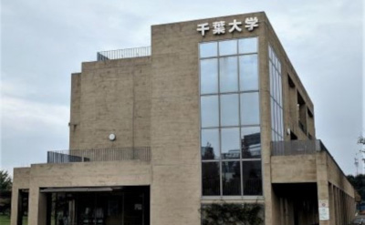
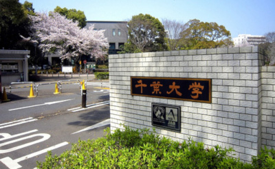

КОНТАКТЫ
Center for Environment, Health and Field Sciences

Kashiwano-ha Campus 6-2-1, Kashiwano-ha, Kashiwashi, Chiba, 277-0882 Japan
CHIBA UNIVERSITY Nishi-Chiba Campus (Administration Bureau)

1-33, Yayoicho, Inage Ward, Chiba-shi, Chiba, 263-8522 Japan